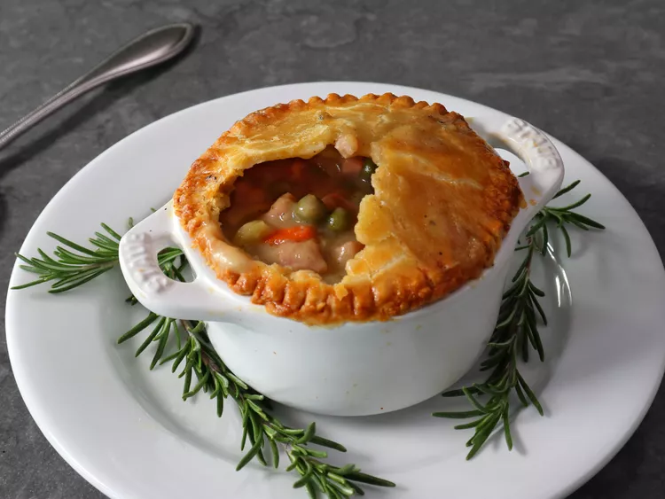

Holiday Ham Pot Pie
Main Page
Find out how to make a delicious Holiday Ham Pot Pie here!

These magnificent holiday ham pot pies feature a user-friendly, buttery, ancient hot water pastry crust, which is both sturdy and tender, and often functioned as an edible napkin for a hand-held pie. You can use leftover ham or ham purchased just for the recipe. Four 7-ounce ramekins are the perfect size for these pot pies.
Ingredients
Filling:
- 3 tablespoons unsalted butter
- 1 pinch of salt
- 1/2 cup diced onions
- 1/3 cup diced carrots
- 1/3 cup diced celery
- 1/3 cup all purpose flour
- 2 cups chicken broth
- 1/4 cup cream
- 1 cup cubed ham
- 1 teaspoon freshly ground black pepper
- 1 pinch cayenne pepper
- 1/4 cup water, or as needed
- 1/2 cup frozen peas
Hot Water Pastry:
- 2 1/4 cups all purpose flour
- 1 teaspoon kosher salt
- 8 tablespoons unsalted butter
- 1/2 cup plus 1 tablespoon water, or as needed
Egg Wash:
- 1 large egg
- 1 teaspoon water
Cooking Steps
- Melt butter with a pinch of salt in a saucepan over medium high heat, and sauté onions, carrot, and celery until onions turn translucent, 3 to 5 minutes. Stir in flour and cook until mixture begins to turn a light golden brown, about 2 minutes more. Pour in chicken broth, and stir constantly until mixture thickens.
- Add cream, ham, rosemary, freshly ground black pepper, and cayenne. Stir in a splash of water, and bring mixture to a simmer. Reduce heat to medium-low and simmer for 10 minutes, stirring occasionally. Stir in peas, taste, and adjust seasoning. Remove from heat and let cool. Refrigerate until needed.
- Preheat the oven to 400 degrees F (200 degrees C). Line a sheet pan with foil. Stir salt into flour in a bowl, and make a well in the center.
- Bring butter and water to a simmer, and as soon as butter is almost all melted, remove from heat and carefully pour into the flour. Stir until mixture starts to come together, and is cool enough to handle.
- Press dough together in the bowl, and transfer to a work surface. Press and knead briefly to form a ball of dough, then shape into a disc. At any point if the dough is too dry, sprinkle over some cold water to adjust the texture.
- Flour both sides of dough, and roll into a circle about 1/8-inch thick. Cut into 4 pieces; you will work with 1 piece at a time. Place remaining dough pieces on a plate, and cover until ready to use.
- Cut a circle slightly larger than the size of the ramekin you are using from 1 piece of dough; set aside. Gather up the rest of the piece of dough into a ball; press into a disc. Again, roll out 1/8-inch thick, and place into the ramekin. Press firmly into the bottom and sides of the ramekin, trying to maintain an even thickness, and make sure the dough extends up and over the top edge.
- Fill to the top with cooled ham mixture.
- Whisk egg and the 1 teaspoon water together in a small bowl to make egg wash. Brush egg wash around top edge of dough in the ramekin. Lightly brush the round top piece with egg wash, and center dough, egg-wash-side down, over the filling. Press to seal edges of top and bottom crust together.
- Trim crust to the edge of the ramekin with a knife. For a decorative crimp, press the tines of a fork around the crust edges; this will also help to seal edges firmly. Brush top crust with egg wash.
- Make a hole in the center with the tip of a knife to vent steam. Repeat the process to make 3 more pies with remaining dough and filling. Transfer finished pot pies to the prepared sheet pan.
- Bake in the preheated oven until crust is golden brown, and the sauce is bubbling out of the hole in the center, about 1 hour.
- Serve hot, eaten with a spoon from the ramekin, or let cool to warm, and remove whole pot pie from ramekin, to eat with your hands. These are also great eaten at room temperature or cold.